Particle Tokenizer
Particle tokenizer encodes local interactions within topology-guided, particle-particle and particle-boundary branches.
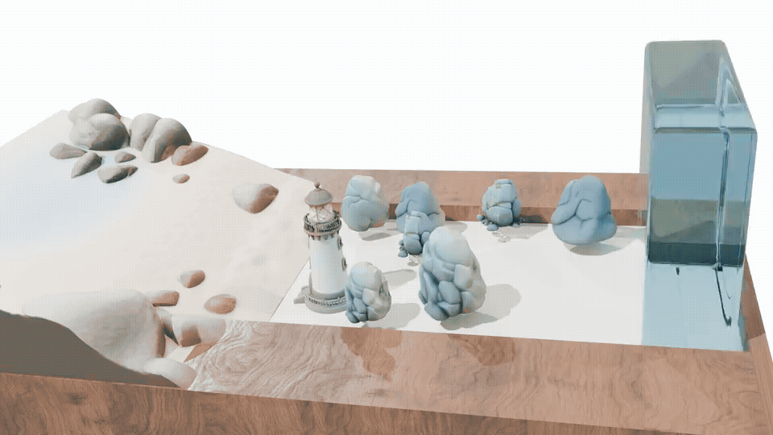
SIGGRAPH Asia 2026
Unified World Simulation of Lagrangian
Particle Dynamics via Transformer
WorldParticle unifies simulation at the architecture and workflow level: we use one architecture, one training recipe, and one inference codebase for all dynamics categories.
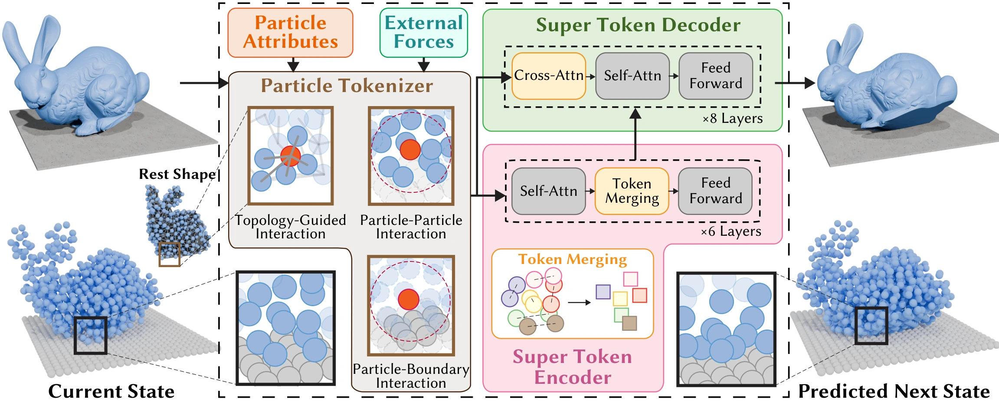
Our framework first handles known external forces with an explicit predictor, then learns a corrector that estimates residual position and velocity updates through a particle tokenizer, a super-token encoder, and a super-token decoder.
Particle tokenizer encodes local interactions within topology-guided, particle-particle and particle-boundary branches.
Super token encoder hierarchically merges particle tokens to build super tokens. Super token decoder recovers particle-level motions through a global-coupled attention mechanism.
WorldParticle has been extensively validated across six dynamics, from microscopic protein motion to macroscopic physical simulations.
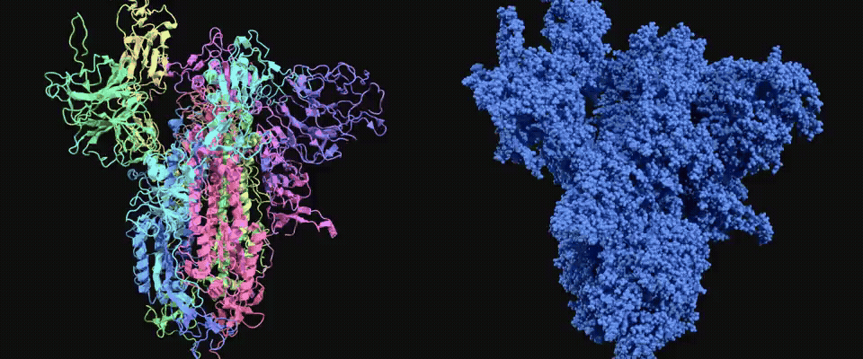
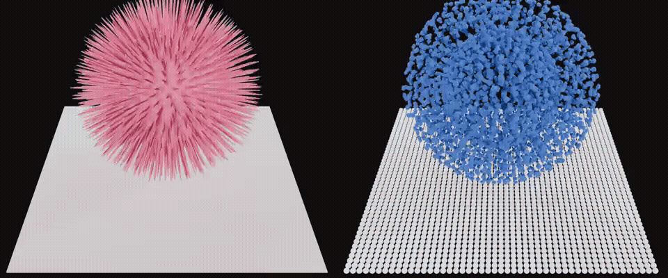
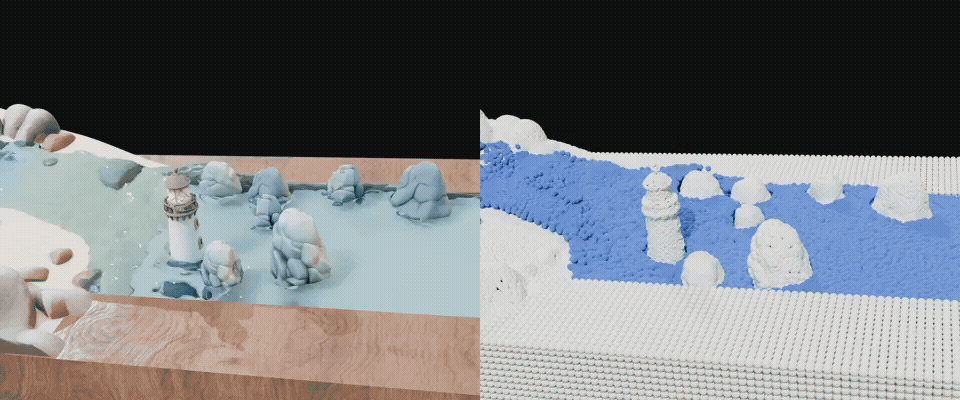
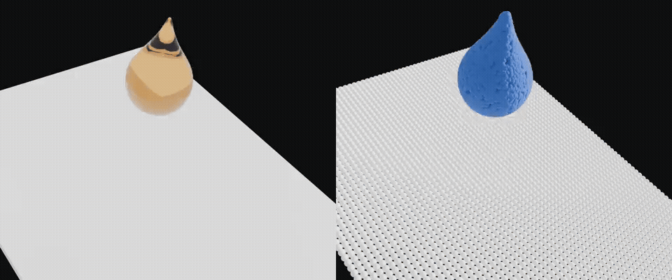
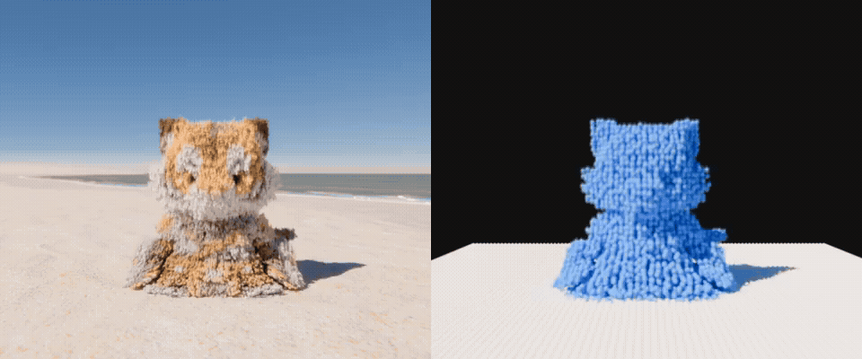
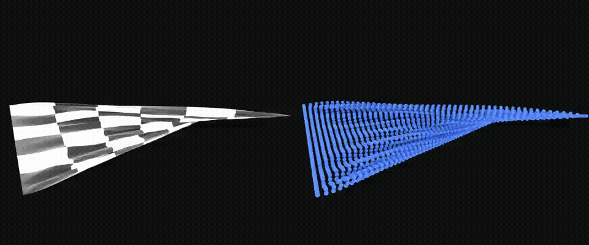
Unseen Young's modulus
Unseen obstacle positions
Unseen rotation
Unseen initial geometry
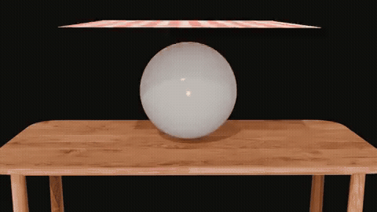
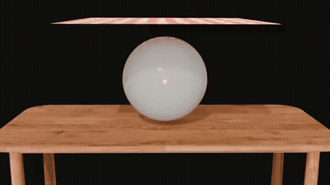
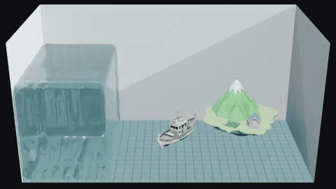
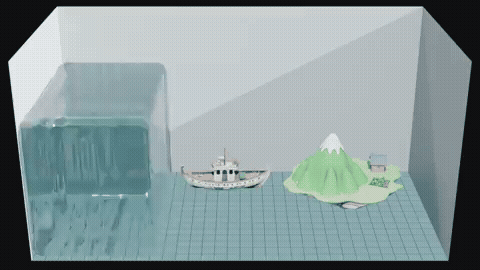
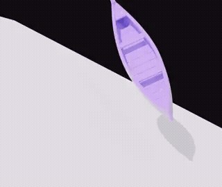
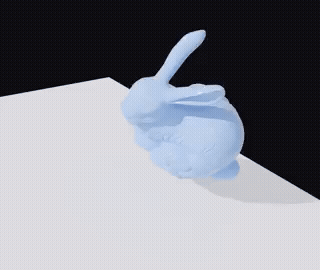
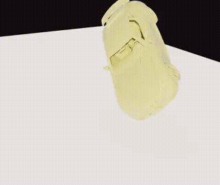
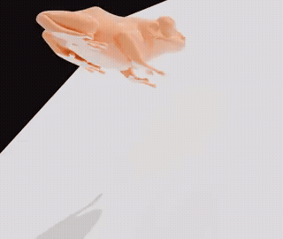
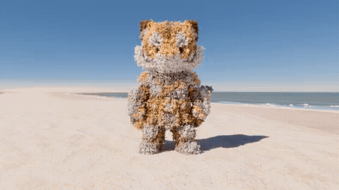
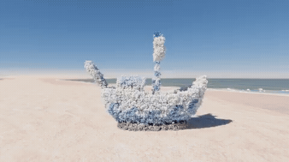
Example sequences show cloth colliding with a sphere with various Young's modulus; Newtonian fluids flowing with varying viscosity and obstacle placements in a container; granular sand collapsing with varied initial shapes and friction; non-Newtonian fluids with varying rheological properties on different slopes; and elastic solids with varying initial rotations on a fixed slope. All test sequences use unseen configurations.
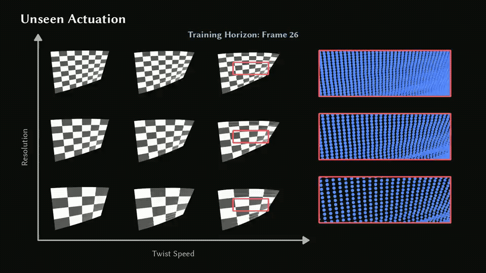
Cloth-twisting sequences use actuation strengths not observed during training. WorldParticle remains stable for 250 frames, beyond the 200-frame training horizon.
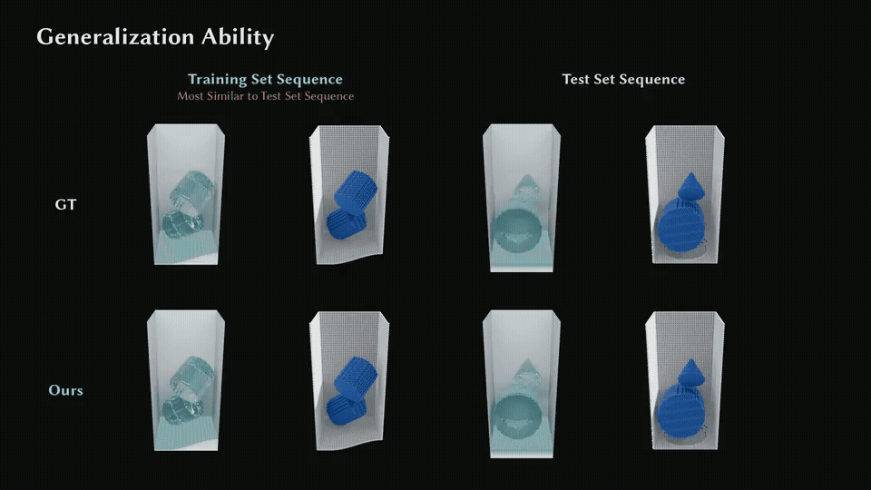
The closest training example and an unseen test sequence are compared. Orange boxes highlight differences in fluid volume and container geometry.
WorldParticle remains stable for up to eight hundred frames in the fluid experiment, substantially beyond competing neural simulators.
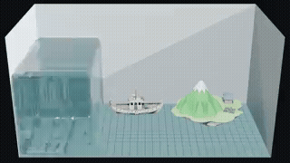
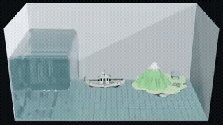
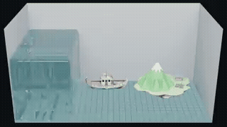
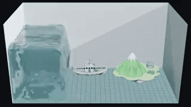
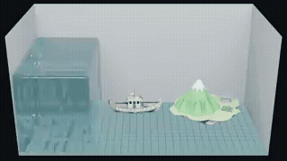
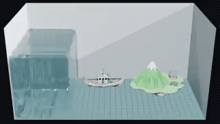
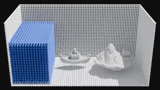
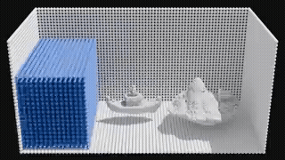
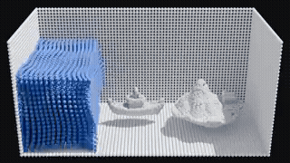
WorldParticle supports several applications, including interactive control and inverse design, while unlocking new avenues for exploration through molecular world models and real-world simulators.
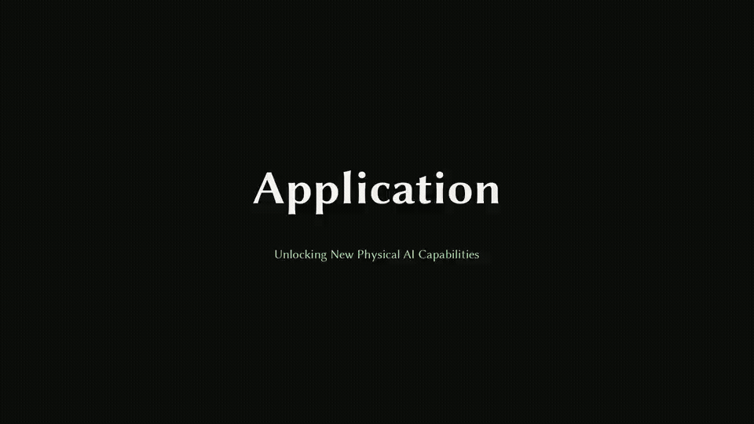
Our framework generalizes to unseen force configurations because the prediction step explicitly integrates external forces, while fast inference enables interactive applications.
Our framework enables inverse optimization because gradients can be backpropagated through autoregressive neural rollouts.
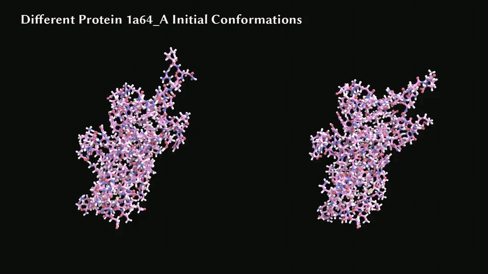
Our framework predicts side-chain rotational dynamics at 50 fs timesteps, 100× larger than the 0.5 fs steps used in traditional OpenMM simulations, while its strong generalization enables a Molecular World Model for predicting future molecular dynamics.
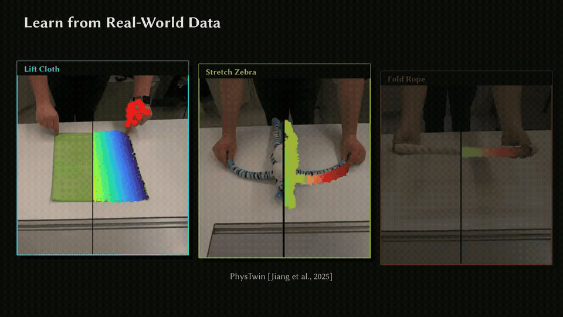
Our framework directly learns dynamics from real-world point cloud observations because it operates on particle representations, without requiring a classical simulator.
@article{wang2026worldparticle,
title = {WorldParticle: Unified World Simulation of Lagrangian Particle Dynamics via Transformer},
author = {Wang, Caoliwen and Guo, Minghao and Chen, Siyuan and Zhang, Heng and Wang, Mengdi and Ni, Xingyu and Sun, Hanson and Wang, Kunyi and Pan, Zherong and Wu, Kui and Liu, Lingjie and Yang, Yin and Jiang, Chenfanfu and Komura, Taku and Matusik, Wojciech and Chen, Peter Yichen},
journal = {arXiv preprint arXiv:2605.15305},
year = {2026}
}